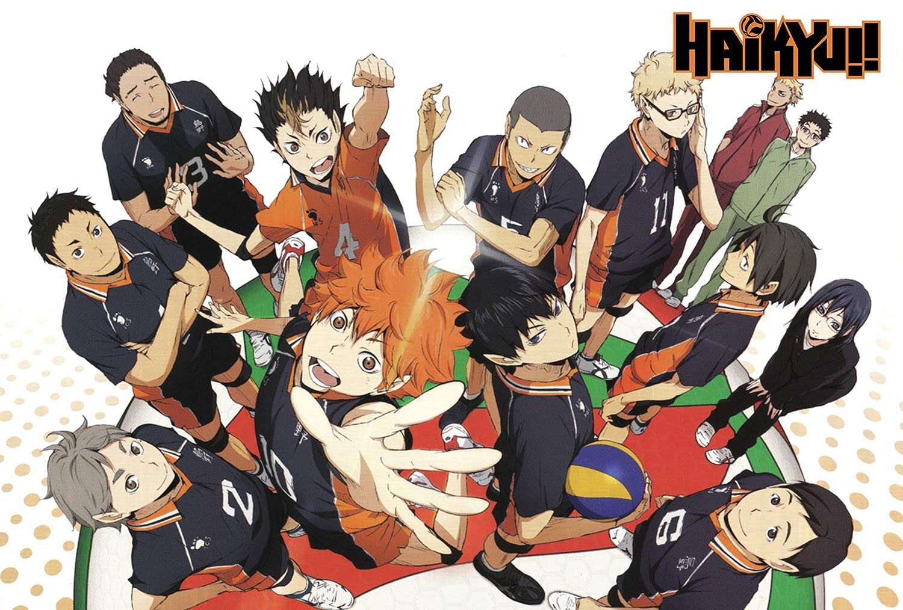

1. Haikyuu

Haikyuu!! is a popular sports anime and manga series about the Karasuno High School volleyball team, focusing on the journey of its underdog players as they work to overcome their challenges and reach the national championships. The story centers on the contrasting personalities of the protagonist, Shoyo Hinata, a short but energetic player, and his rival turned teammate, the prodigy setter Tobio Kageyama. The series is praised for its compelling characters, teamwork-focused narrative, emotional depth, and realistic portrayal of volleyball.
2. BlueLock

Blue Lock is a sports anime about a radical training program created by the Japan Football Union to find and create Japan's greatest and most egoistic striker after their loss in the 2018 World Cup. High school players compete in a series of brutal, elimination-style challenges where only one person can succeed, while the rest are banned from joining the national team. The story follows protagonist Isagi Yoichi, a talented but conflicted forward, as he navigates the competitive, individualistic, and often violent environment of the Blue Lock facility to become the world's best striker.
3. Kuroko's Basketball

Kuroko's Basketball is a sports anime about the Seirin High School basketball team's quest to become the best in Japan. The team's two main players are Tetsuya Kuroko, the "phantom sixth man" of a legendary middle school team called the "Generation of Miracles," and Taiga Kagami, a naturally talented player who spent his middle school years in America. Their goal is to defeat all the other members of the "Generation of Miracles," who are now on different high school teams.
4. Aoashi
5. MF-Ghost

MF Ghost is an anime series set in a future where self-driving electric cars are the norm, but a racing circuit called MFG keeps traditional internal combustion engine cars alive. The story follows Kanata Rivington, a young British-Japanese racer who returns to Japan to compete in the MFG, a global race held on public roads, while also searching for his estranged father. As a graduate of a racing school trained by Initial D's Takumi Fujiwara, Kanata enters the high-stakes competition with a Toyota 86.